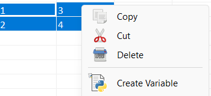
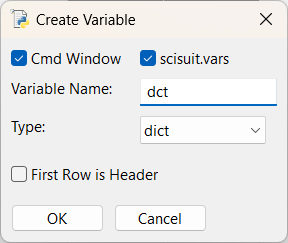

Package to enrich workbook's capabilities:
Shown as a menu item in context-menu when there is a selection in a worksheet.

The app assists in creating the following variable types:

Export Selection Menu Item (shown when there is a selection in a worksheet and the context-menu for selection is displayed). Selection can be exported to:
Shown as a menu item in context-menu when right-clicked on a worksheet tab. Imports data from tab-separated text files and CSV files.